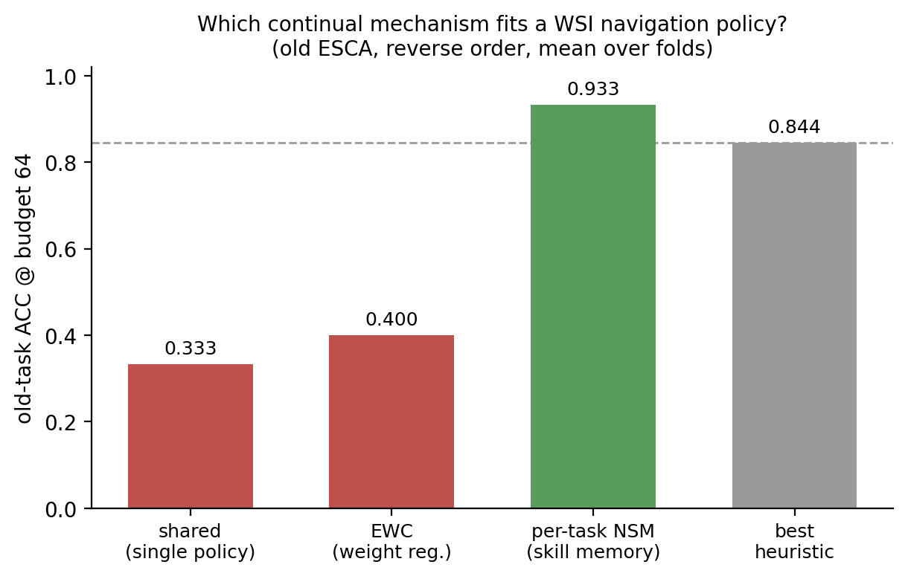
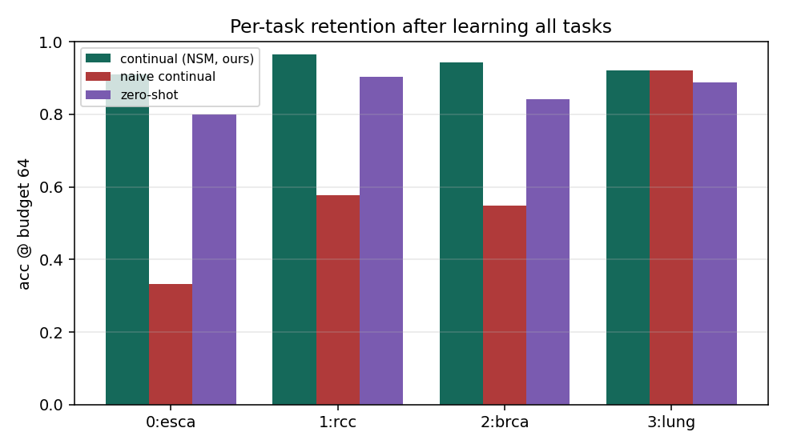
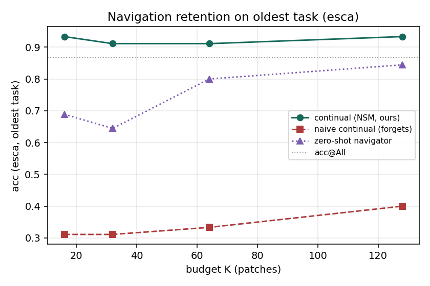

N0–N4 完成（架構 + sequential observation + RunPod 實驗 + 分析 + 報告稿）；N5（7/3 報告）收尾中，下一階段 N6 便宜記憶 + 論文。
Done = Phase-0 SDD milestone；In progress / Next = 接續實驗與交付。
各 milestone 產出的檔案位置（repo 相對路徑）。
| 交付物 | 路徑 | 狀態 |
|---|---|---|
| 敘事錨 Storyline | STORYLINE.md | 完成 |
| SDD specs / ADR / worklog | specs/ | 完成 |
| 持續導覽 agent | navipath_moe/continual_agent.py | 完成 |
| mechanism 表工具 | tools/mechanism_table.py | 完成 |
| 5 張核心圖 | outputs/figs/Fig*.png | 完成 |
| N2/N3 結果 + 分析 | outputs/RESULTS_seqobs_20260628.md、analyze_seqobs_n3.py、site/figs/n3_*.png | 完成 |
| 雙月報告稿（agent+CL） | reports/bimonthly_2026-07-03.md | 完成 |
| 7/3 口頭講稿 | reports/talk_2026-07-03.md | 完成 |
| 答辯底稿 wiki | docs/wiki/07–11、site/notes.html | 完成 |
| 論文初稿大綱 | paper/NaviPath-CL_draft_outline.md | 完成 |
| 年度報告大綱 | reports/annual_2026-07-20_outline.md | 完成 |
| 對稱證據（paper-order / EWC） | outputs/（RunPod 回傳） | 待跑 |
支撐 mechanism-selection 結論。

outputs/figs/Fig_mechanism.png。凍結 backbone，只動 navigation 層。oracle gate，seq 模式，budget=64。來源：outputs/RESULTS_seqobs_20260628.md、analyze_seqobs_n3.py。
三層故事：naive 可訓練 navigator 嚴重遺忘 → NSM 完全修復（我們） → zero-shot 很強但仍輸我們（continual navigation learning 再加值 +0.077，且同樣零遺忘）。誠實點：seq≈one-shot，agentic 序列增益待調參。
| 任務（reverse） | continual+NSM（我們） | naive continual | zero-shot |
|---|---|---|---|
| 0 esca（最舊） | 0.911±0.031 | 0.333±0.144 | 0.800±0.094 |
| 1 rcc | 0.965±0.025 | 0.576±0.076 | 0.904±0.060 |
| 2 brca | 0.944±0.013 | 0.549±0.054 | 0.841±0.040 |
| 3 lung（最新） | 0.922±0.020 | 0.922±0.020 | 0.888±0.026 |

site/figs/n3_retention_bar.png。
site/figs/n3_esca_budget_curve.png。